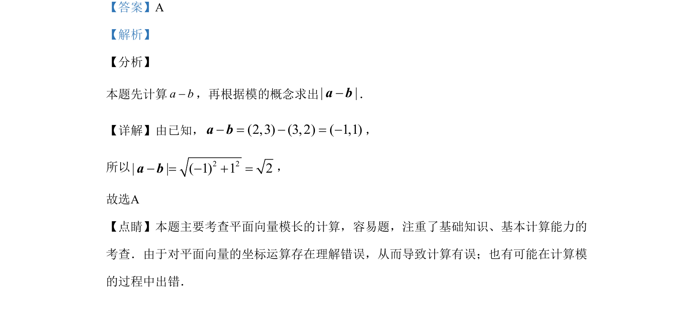

考点：平面向量坐标运算 向量的模
本题主要考查平面向量的坐标运算和模长计算。

📄 原 PDF 第 2 页：
素材/真题/吉林/2008-2024·（吉林）数学高考真题/2019年高考数学试卷（文）（新课标Ⅱ）（解析卷）.pdf
3.已知向量a=(2，3)，b=(3，2)，则|a–b|= A. 2 B. 2 C. 52 D. 50
【答案】A 【解析】 【分析】 本题先计算a b-，再根据模的概念求出| |-a b． 【详解】由已知，(2,3) (3, 2) ( 1,1)- = - = -a b， 所以 2 2| | ( 1) 1 2- = - + =a b， 故选A 【点睛】本题主要考查平面向量模长的计算，容易题，注重了基础知识、基本计算能力的 考查．由于对平面向量的坐标运算存在理解错误，从而导致计算有误；也有可能在计算模 的过程中出错．